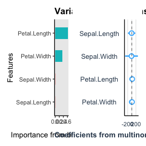
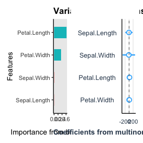
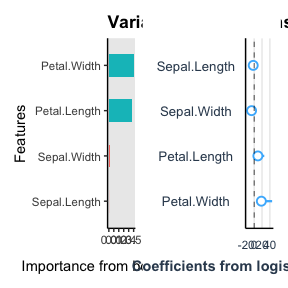
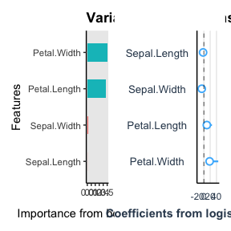

library(autostats)
library(dplyr)
#>
#> Attaching package: 'dplyr'
#> The following objects are masked from 'package:stats':
#>
#> filter, lag
#> The following objects are masked from 'package:base':
#>
#> intersect, setdiff, setequal, unionplot variable contributions
multiclass target
Species is a 3-level factor so it will be automatically modelled with a multiclass neural network and a light gbm with multiclass objective function.
First set define the formula to use for modeling.
iris %>%
tidy_formula(target = Species) -> species_formula
species_formula
#> Species ~ Sepal.Length + Sepal.Width + Petal.Length + Petal.Width
#> <environment: 0x12bdd26e0>
iris %>%
auto_variable_contributions(species_formula) 

iris %>%
auto_model_accuracy(species_formula)4 - fold cross-validated accuracy for classification model of Species on dataset iris | |||
|---|---|---|---|
model |
metric |
mean_score |
std_err |
xgboost |
accuracy |
0.9531 |
0.02039 |
brier_class |
0.0415 |
0.01907 |
|
roc_auc |
0.9869 |
0.00979 |
|
binary target
Linear models uses weighted logistic regression for modeling the coefficients
iris %>%
filter(Species != "setosa") %>%
auto_variable_contributions(species_formula) 

For the variable contributions the linear model uses penalized logistic regression provided by glmnet.
iris %>%
filter(Species != "setosa") -> iris_binary
iris_binary %>%
auto_model_accuracy(species_formula)4 - fold cross-validated accuracy for classification model of Species on dataset iris_binary | |||
|---|---|---|---|
model |
metric |
mean_score |
std_err |
xgboost |
accuracy |
0.9200 |
0.0490 |
brier_class |
0.0646 |
0.0384 |
|
roc_auc |
0.9728 |
0.0272 |
|
continuous target
Models are automatically adapted for a continuous target.
Define the new formula
iris %>%
tidy_formula(target = Petal.Length) -> petal_formula
petal_formula
#> Petal.Length ~ Sepal.Length + Sepal.Width + Petal.Width + Species
#> <environment: 0x11a3d6368>
iris %>%
auto_model_accuracy(petal_formula)4 - fold cross-validated accuracy for regression model of Petal.Length on dataset iris | |||
|---|---|---|---|
model |
metric |
mean_score |
std_err |
xgboost |
rmse |
0.293 |
0.01732 |
rsq |
0.972 |
0.00308 |
|
auto anova
auto anova automatically regresses each continuous variable supplied against each categorical variable supplied. Lm is called separately for each continuous/ categorical variable pair, but the results are reported in one dataframe. Whether the outcome differs amongst categorical levels is determined by the p.value. The interpretation is affected by the choice of baseline for comparison. Traditionally the first level of the factor is used, however option to use the mean of the continuous variable as the baseline intercept is a helpful comparison.
iris %>%
auto_anova(Species, matches("Petal"), baseline = "first_level")
#> # A tibble: 6 × 12
#> target predictor level estimate target_mean n std.error level_p.value
#> <chr> <chr> <chr> <dbl> <dbl> <int> <dbl> <dbl>
#> 1 Petal.Leng… Species (Int… 1.46 1.46 50 0.0609 9.30e-53
#> 2 Petal.Leng… Species vers… 2.80 4.26 50 0.0861 5.25e-69
#> 3 Petal.Leng… Species virg… 4.09 5.55 50 0.0861 4.11e-91
#> 4 Petal.Width Species (Int… 0.246 0.246 50 0.0289 1.96e-14
#> 5 Petal.Width Species vers… 1.08 1.33 50 0.0409 1.25e-57
#> 6 Petal.Width Species virg… 1.78 2.03 50 0.0409 7.95e-86
#> # ℹ 4 more variables: level_significance <chr>, predictor_p.value <dbl>,
#> # predictor_significance <chr>, conclusion <chr>